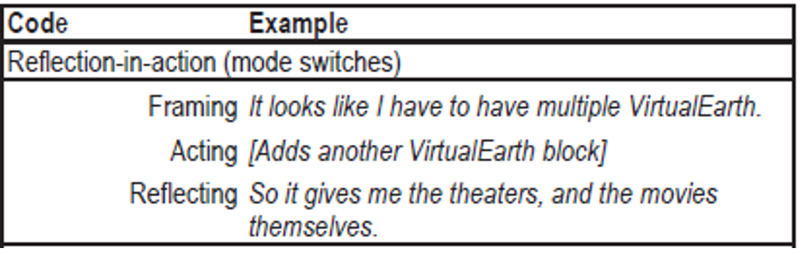

Projects -> An Idea Garden for End-User Programmers -> Idea Garden User Research
User Research (Idea Garden)
Methods: baseline usability testing, competitive analysis, scenarios, workflow analysis, surveys (on psychometric change), literature-informed data analysis, data triangulation, affinitization, data visualization.
Tools: sticky notes & whiteboard, paper & pencil, Morae, Excel & VBA, MATLAB
Skills highlighted:
- Developing a comprehensive research plan encompassing competitive analysis of similar systems, literature review of user behavior theories, collection of subjective and objective user data, and application of theories to data to understand user needs.
- Distilling user needs using methodological analyses of messy behavioral data
- Uncovering and communicating insights from rich data through customized visualizations
- Translating research findings into actionable design recommendations
Gather baseline user data
I leveraged baseline usability testing as the primary data collection method. I conducted a 1.5-hour one-on-one session with sixteen end-user programmers to observe their current workflows and pains as they attempted to create web mashups using Microsoft Popfly and IBM CoScripter under given scenarios. collected users' verbal protocols and recordings of their interactions with the systems.
A user attempting to create a mashup to show local movies using Popfly.
Challenges in data analysis: messy data
The programming tasks proved difficult to most study participants given their unfamiliarity with programming. This is typical of end-user programmers. Participants had not solved similar problems before and had no known methods to apply, fumbling in murkiness. For example, when participants were stuck, they often resorted to random trial and error.
The challenge in analyzing this data was how to make sense of users' behaviors given its messy nature and how to generate implications for designing a programming assists that will help users navigate through the murkiness.
My approach
I applied well regarded design and creativity theories to the data to characterize users' pains and to better understand users' messy workflows. I also created visualizations to highlight trends in the data.
I leveraged Schön's reflection-in-action design theory. According to the theory, users experience three stages when designing: framing the problem, acting upon it, and reflecting on the outcomes of their action. To operationalize the theory, I affinitized each user's data (verbal protocols and actions) into the three stages. The figure below shows a piece of example data for each stage.
Affinitization categories based on design and creativity theories.
To observe trends over time, I created visualizations for the affinitized data along a timeline for each user. The visualizations revealed patterns illustrated in the figure below.
Visualization of four users' problem-solving workflows using Schön's design theory as a framework. The four participants were F1, F4, M1, and M6. F, A, and R represent framing, acting, and reflecting. Three patterns are illustrated: restart, stair-step, and w.
To gain insights into user behaviors from a creativity angle, I applied well-recognized creativity theories. Creativity theories are concerned with expansion and contraction of the idea space, the collection of idea a person has for solving a problem. The figure below shows examples of idea space expansions and contractions.
Examples for idea expansions and contractions.
To quickly visualize the idea space, I used sticky notes and the whiteboard. Each sticky note represented a user's idea space at a given moment. The arrows indicated either an expansion or contraction. I later created a digital version of the sticky note visualization for in-depth analysis and collaboration purposes.
Quick visualization of the expansions and contractions of a user's idea space using stickies and whiteboard.
Visualization of the sticky note workflows for in-depth analysis.
Key design recommendation
The visualizations marked key differences in users' behaviors. While some users tried only a few ideas as illustrated in smaller graphs, other attempted many more resulting in bigger graphs. Those who tried out many ideas became more successful when their initial ideas did not pan out.
Therefore, a key design recommendation is for the system to help users generate more ideas when they are stuck, especially ideas to help them to reframe the problem at hand.
The rate at which users came up with reframing ideas. Users who had the most ideas, M3 and M4, were more successful than those who had few ideas, e.g., F3, F4, and M6.
The Interaction Design and Prototyping Section summarizes how I addressed this key design recommendation.
Deliverables
- End-User Mashup Programming: Through the Design Lens, Best Paper Award nomination at ACM CHI, world's premium conference in human-computer interaction. Ranked top 5% among1346 submissions (22% acceptance rate).
- An Exploration of Design Opportunities for “Gardening” End-User Programmers’ Ideas , Best Paper Award at IEEE Symposium on Visual Languages and Human-Centric Computing, premium conference in human factors in programming environment design.